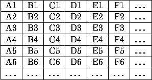

| Spreadsheet |
In 1979, Dan Bricklin and Bob Frankston wrote VisiCalc, the first spreadsheet application. It became a huge success and, at that time, was the killer application for the Apple II computers. Today, spreadsheets are found on most desktop computers.
The idea behind spreadsheets is very simple, though powerful. A spreadsheet consists of a table where each cell contains either a number or a formula. A formula can compute an expression that depends on the values of other cells. Text and graphics can be added for presentation purposes.
You are to write a very simple spreadsheet application. Your program should accept several spreadsheets. Each cell of the spreadsheet contains either a numeric value (integers only) or a formula, which only support sums. After having computed the values of all formulas, your program should output the resulting spreadsheet where all formulas have been replaced by their value.

Figure: Naming of the top left cells
The first line of the input file contains the number of spreadsheets to follow. A spreadsheet starts with a line consisting of two integer numbers, separated by a space, giving the number of columns and rows. The following lines of the spreadsheet each contain a row. A row consists of the cells of that row, separated by a single space.
A cell consists either of a numeric integer value or of a formula. A formula starts with an equal sign (=). After that, one or more cell names follow, separated by plus signs (+). The value of such a formula is the sum of all values found in the referenced cells. These cells may again contain a formula. There are no spaces within a formula.
You may safely assume that there are no cyclic dependencies between cells. So each spreadsheet can be fully computed.
The name of a cell consists of one to three letters for the column followed by a number between 1 and 999 (including) for the row. The letters for the column form the following series: A, B, C, ..., Z, AA, AB, AC, ..., AZ, BA, ..., BZ, CA, ..., ZZ, AAA, AAB, ..., AAZ, ABA, ..., ABZ, ACA, ..., ZZZ. These letters correspond to the number from 1 to 18278. The top left cell has the name A1. See figure 1.
The output of your program should have the same format as the input, except that the number of spreadsheets and the number of columns and rows are not repeated. Furthermore, all formulas should be replaced by their value.
1 4 3 10 34 37 =A1+B1+C1 40 17 34 =A2+B2+C2 =A1+A2 =B1+B2 =C1+C2 =D1+D2
10 34 37 81 40 17 34 91 50 51 71 172